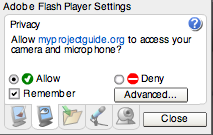

How to show live camera view?
The live boolean property controls the live camera view in VideoIO. When set to true, the live camera view is displayed, and when set to false, the camera view is switched off. The VideoIO application automatically updates this property when you specify a publishing or recording src URL. Hence, the live property also indicates whether the camera view is on or not? Additionally, you can set it yourself in one of several ways.
When the camera view is enabled, the Flash Player prompts the user for permission, whether to "Allow" or "Deny" access to the camera and microphone. This gives end-user complete control over whether to enable recording from his camera and microphone on any third-party web sites. Note that this prompt is generated by Flash Player plugin, and not explicitly by the VideoIO application.
For trusted web sites, it is recommended to always allow the device access. Users can do so in their Flash Player settings. Right click on the VideoIO application, select the "Settings" menu option, click on the second tab titled "Privacy", then select "Allow", "Remember" and click on "Close" button. Selecting the "Remember" option will avoid the Flash Player prompt on that web site, everytime you enable your camera. A screen shot of the privacy settings is shown below.
To statically set the liveproperty, use flashVars as shown below. Additionally, if you use the controls property, the video control panel can allow the user to enable or disable the camera view by clicking on the camera icon.
<object type="application/x-shockwave-flash" data="VideoIO.swf"
id="video1" width="320" height="240">
<param name="movie" value="VideoIO.swf" />
<param name="quality" value="high" />
<param name="bgcolor" value="#000000" />
<param name="allowFullScreen" value="true" />
<param name="allowScriptAccess" value="" />
<param name="flashVars" value="controls=true&live=true" />
</object>
To programmatically set the property, use JavaScript as shown below. The example shows a check box which controls the live property of the associated VideoIO application named video1. Note that JavaScript method works only if both the HTML page containing JavaScript and the VideoIO.swf are hosted on the same web site (See How to embed VideoIO in your web page? for details). To see the demonstration, attach your web cam to your PC and click on the check box to enable live camera view.
<object type="application/x-shockwave-flash" data="VideoIO.swf"
id="video1" width="320" height="240">
<param name="movie" value="VideoIO.swf" />
<param name="quality" value="high" />
<param name="bgcolor" value="#000000" />
<param name="allowFullScreen" value="true" />
<param name="allowScriptAccess" value="always" />
</object>
<script>
function getFlashMovie(movieName) {
var isIE = navigator.appName.indexOf("Microsoft") != -1;
return (isIE) ? window[movieName] : document[movieName];
}
</script>
<input id="live1" type="checkbox" autocomplete="off"
onclick="getFlashMovie('video1').setProperty('live',
document.getElementById('live1').checked)"/>
select to enable live camera view
|
In VideoIO the live camera view is always flipped horizontally when displayed to appear as if you are looking in a mirror. This affects only the local video display view, but the actual media stream captured and sent to the server or remote end is not affected. We feel that mirrored view of local video gives the most natural behavior for live video chat or message recording. Please see the flash-mirror project for details on how this is done.